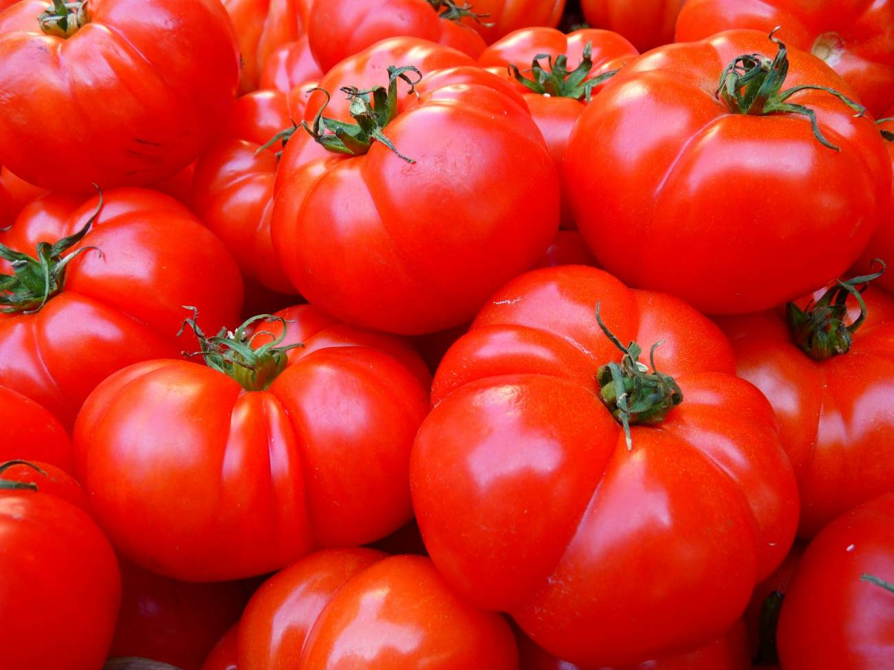
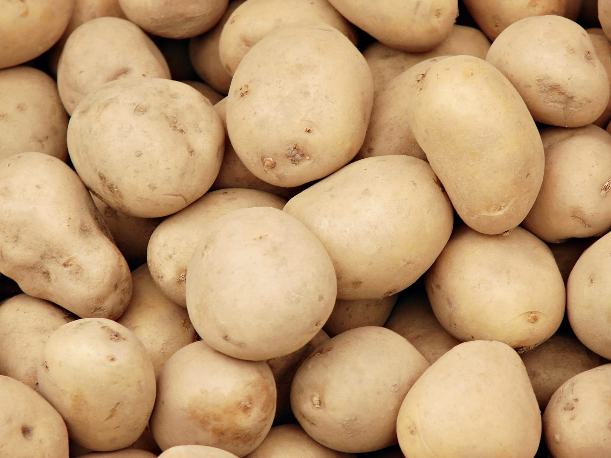
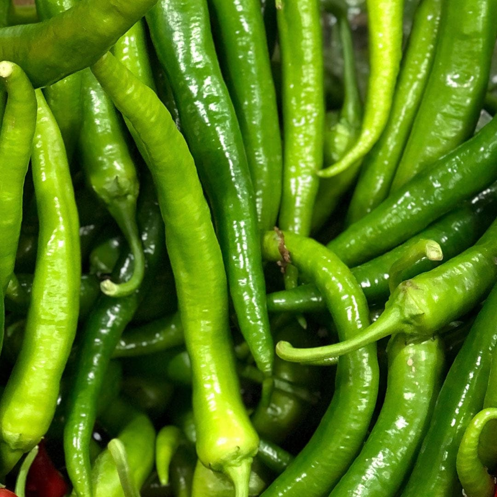
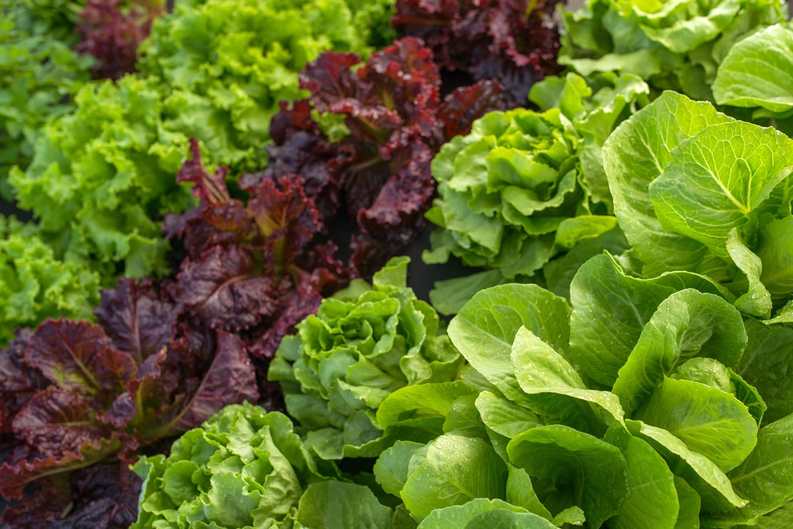
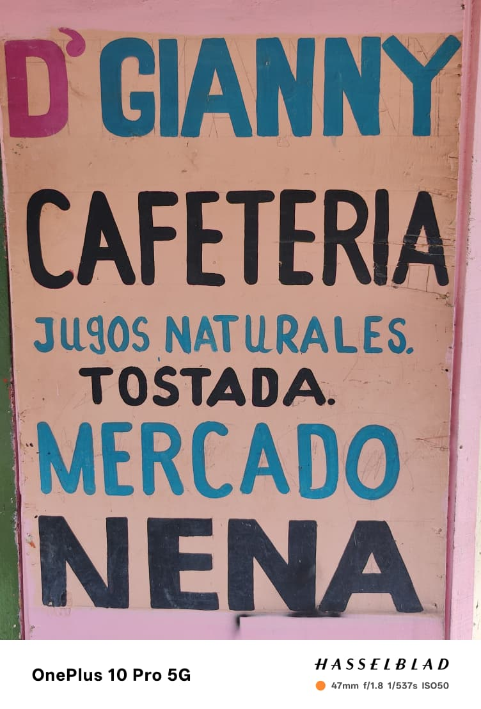
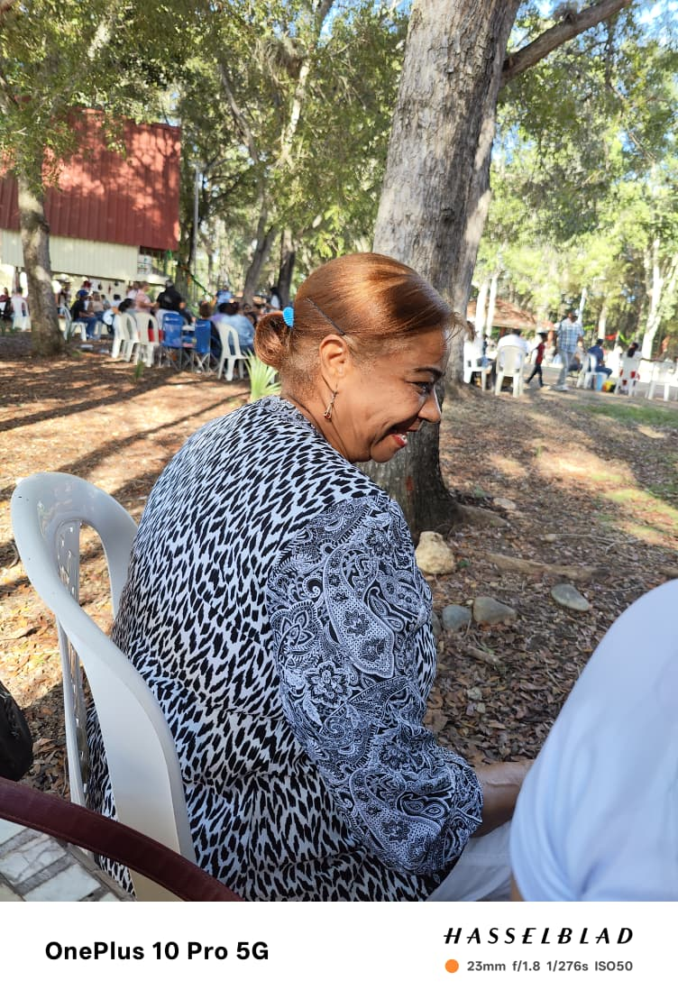
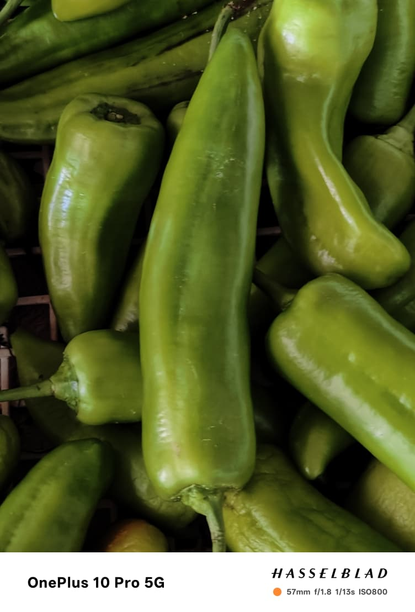

Verduras del campo
En Mercadito Nena nos dedicamos a ofrecerte las verduras frescas del campo directamente a tu mesa.

Tomates frescos

Papas del campo

Ají verde

Lechuga fresca
Zanahorias
Este es un pequeño negocio familiar llevado por la abuelita Nena Verdura desde hace muchos años. Cada día abre su mercadito con mucho esfuerzo y cariño para ofrecer productos frescos a la comunidad.
Fotografías del local y de Nena Verdura



Nos encontramos en la calle 27 de Febrero número 171, antes de llegar al colmadón JR.
Si deseas comunicarte con nosotros puedes llamar al 829-796-0647 o visitarnos directamente en nuestro mercadito.